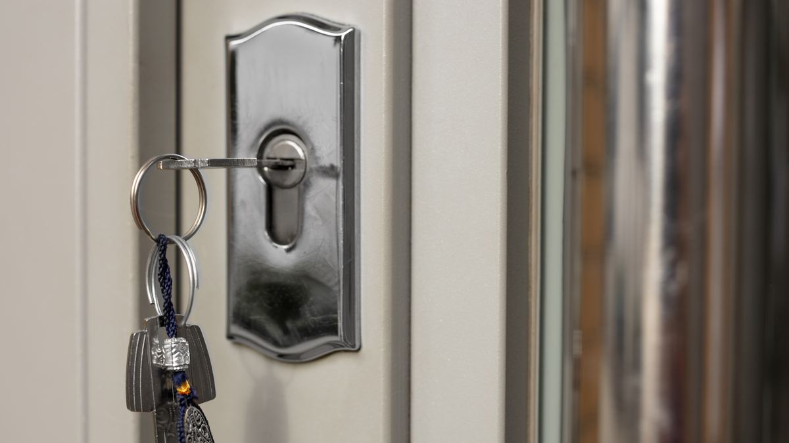

Dom i mieszkanie · 4 min czytania
Zacięty zamek w drzwiach – przyczyny i rozwiązania
Zacięty zamek w drzwiach rzadko psuje się z dnia na dzień. Pokazujemy, jak w kilka minut ustalić przyczynę, co możesz zrobić sam i kiedy lepiej nie walczyć z kluczem.

Zacięty zamek w drzwiach daje o sobie znać stopniowo. Najpierw klucz wchodzi z lekkim oporem, potem trzeba „wyczuć” właściwy moment, żeby go przekręcić, aż w końcu zamek przestaje współpracować. Im wcześniej znajdziesz przyczynę, tym łatwiej ją usuniesz – i tym mniejsza szansa, że klucz złamie się w najgorszym możliwym momencie.
Zacięty zamek w drzwiach – zacznij od testu przy otwartych drzwiach
To najprostszy sposób, żeby ustalić, czy winna jest wkładka, czy same drzwi. Otwórz drzwi i przy otwartym skrzydle przekręć klucz kilka razy w obie strony, tak żeby rygiel wysuwał się i chował.
- Klucz obraca się lekko, a kłopot pojawia się tylko przy zamkniętych drzwiach? Wkładka jest prawdopodobnie w porządku. Winne są drzwi: opadnięte skrzydło albo przesunięta blacha zaczepowa, o którą ociera rygiel lub zapadka.
- Klucz zacina się także przy otwartych drzwiach? Problem tkwi w samej wkładce albo w zamku schowanym w skrzydle.
Jeśli drzwi w ogóle nie dają się otworzyć, pomiń test i przejdź do ostatniej części artykułu.
Najczęstsze przyczyny, gdy zamek w drzwiach się zacina
Brud i brak konserwacji
Do wkładki trafia kurz, piasek z klatki schodowej i drobinki z kieszeni. Z czasem mieszają się ze starym smarem i tworzą lepką maź, która utrudnia pracę mechanizmu. Typowy objaw: klucz wchodzi ciężko i jakby „chrupie”.
Zużyty klucz lub kopia z kopii
Wytarty klucz nie ustawia elementów wkładki tak precyzyjnie jak nowy. Jeśli oryginał działa dobrze, a kopia słabo, problem jest w kopii, nie w zamku – wystarczy dorobić nowy klucz z oryginału.
Opadnięte drzwi i przesunięty zaczep
Ciężkie drzwi z czasem osiadają na zawiasach. Wystarczy kilka milimetrów, żeby rygiel ocierał o blachę zaczepową w ościeżnicy. Zwykle pomaga regulacja zawiasów lub zaczepu – nie smarowanie wkładki. Dochodzi do tego pogoda: drzwi lekko „pracują” pod wpływem temperatury i wilgotności. Drewniane pęcznieją, gdy jest wilgotno, a mocno nasłonecznione skrzydło może się minimalnie wyginać. Stąd zamki, które zacinają się tylko latem albo tylko jesienią.
Zużyta lub uszkodzona wkładka albo zamek
Po latach codziennego używania mechanizm po prostu się wyciera. Zdarza się też, że zacinanie zaczyna się nagle – wtedy obejrzyj wkładkę z zewnątrz. Rysy, wgniecenia czy ślady narzędzi wokół otworu na klucz mogą świadczyć o próbie włamania.
Jeśli zamek zaczął się zacinać nagle, a na wkładce lub drzwiach widzisz świeże rysy albo ślady podważania, nie lekceważ tego. Zrób zdjęcia, zgłoś sprawę na policję i wymień wkładkę na nową.
Czym smarować zacięty zamek, a czego unikać
Konserwacja wkładki zajmuje kilka minut i warto ją robić mniej więcej dwa razy w roku, na przykład wiosną i przed zimą. Ważne, żeby użyć właściwego środka:
- Dobrze: nietłusty preparat w sprayu przeznaczony do wkładek i zamków, najlepiej z cienką rurką. Wprowadź niewielką ilość do otworu na klucz, kilka razy włóż i przekręć klucz, a nadmiar razem z wypłukanym brudem wytrzyj szmatką.
- Źle: olej spożywczy, olej silnikowy, gęsty smar maszynowy. Zbierają kurz i po czasie zamek chodzi jeszcze gorzej.
- Tylko zgodnie z instrukcją: grafit w proszku. Część producentów wkładek wyraźnie go odradza, bo z czasem może zatykać precyzyjny mechanizm. Sięgnij po niego tylko wtedy, gdy zaleca go producent Twojej wkładki.
- Z rozwagą: popularne preparaty wielofunkcyjne dobrze czyszczą i wypierają wilgoć, ale do regularnej konserwacji lepszy jest środek przeznaczony do wkładek.
Smarując wkładkę, posmaruj też rygiel i zapadkę wysuwające się z boku skrzydła oraz blachę zaczepową. Często to one, a nie sam bębenek, stawiają opór przy zamykaniu.
Zamki na zewnątrz – w furtce, bramie czy garażu – mają jeszcze trudniej, bo walczą z deszczem i mrozem. Piszemy o nich osobno w artykule zablokowany zamek w garażu lub furtce.
Czego nie robić, gdy zamek się zacina
- Nie przekręcaj klucza na siłę, a już na pewno nie szczypcami czy kluczem francuskim. To najkrótsza droga do złamanego klucza w zamku.
- Nie odkładaj regulacji drzwi. Dociskanie lub dociąganie skrzydła przy przekręcaniu klucza pomaga doraźnie, ale to sygnał, że drzwi wymagają ustawienia – z czasem będzie tylko gorzej.
- Nie wlewaj do zamka przypadkowych płynów, zwłaszcza zimą i na zewnątrz – woda w zamku może zamarznąć.
- Nie rozkręcaj zamka, jeśli nie wiesz, jak go potem złożyć. W drzwiach z zamkiem wielopunktowym łatwo coś rozregulować.
Kiedy naprawa, a kiedy wymiana wkładki
Czyszczenie, smarowanie i regulacja rozwiązują wiele problemów, ale nie wszystkie. Wymianę wkładki rozważ, gdy:
- po konserwacji klucz nadal chodzi ciężko,
- wkładka ma luz, rusza się w drzwiach albo mocno wystaje poza szyld,
- widzisz ślady prób manipulacji,
- nie wiesz, ile kopii kluczy krąży, na przykład po przeprowadzce.
Więcej sygnałów ostrzegawczych opisujemy w artykule kiedy wymienić zamek w drzwiach.
Zamek zablokował się całkowicie?
Jeśli klucz w ogóle się nie obraca, a Ty jesteś po złej stronie drzwi, nie walcz z zamkiem. Zadzwoń, opisz objawy i rodzaj drzwi – podamy cenę przed rozpoczęciem pracy. Pomagamy przy awaryjnym otwieraniu mieszkań i domów całą dobę, w Kielcach i okolicznych miejscowościach: 668 292 270. Przygotuj dowód osobisty i dokument potwierdzający prawo do lokalu – sprawdzamy je przy każdym otwarciu.